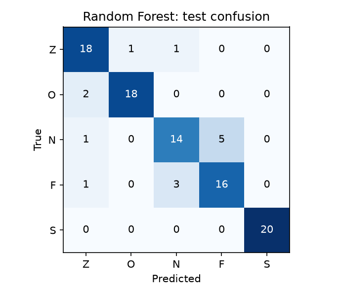
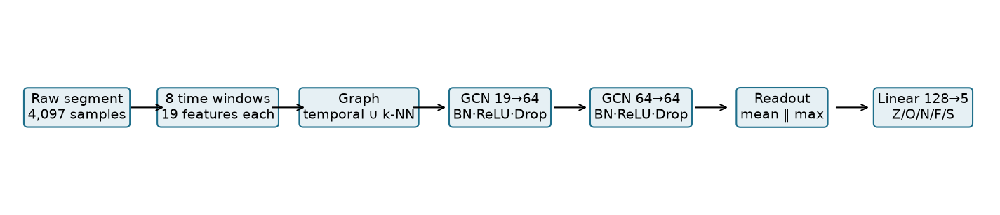
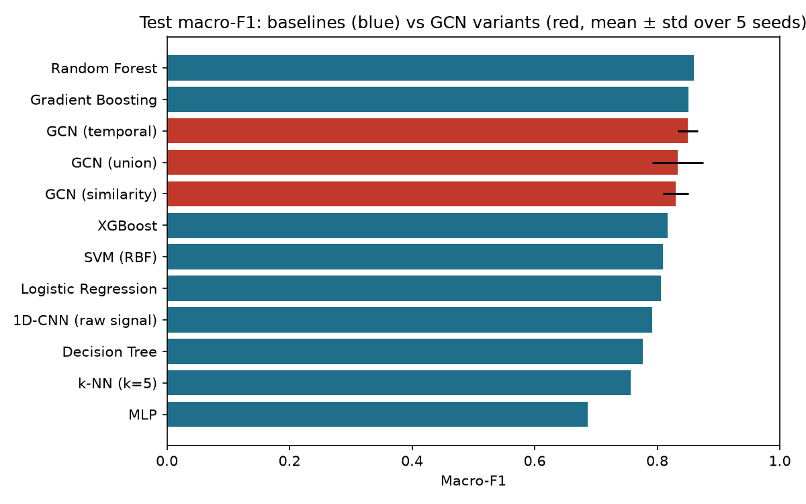
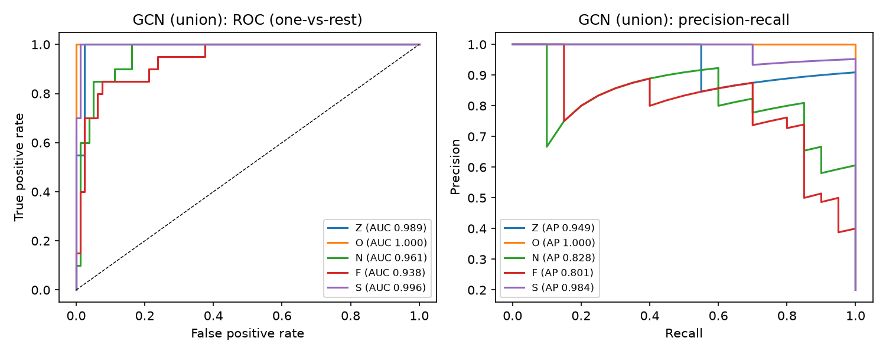

Associate Professor Dr. Raihan ul Islam
| Name | Student ID |
|---|---|
| Md. Anwar Nabil Araf | 2023-2-60-242 |
| Jagannath Banik | 2023-2-60-144 |
| Md Naimul Islam Rafi | 2023-2-60-209 |
| Mst Mahabuba Akter Eka | 2023-1-60-134 |
Code: code/task2/Group02_Bonn_task2_baselines.ipynb, code/task2/Group02_Bonn_task2_proposed_model.ipynb, code/task2/task2.py. Results: outputs/task2/.
| Item | Decision |
|---|---|
| Data | Bonn EEG, 500 single-channel segments (Z, O, N, F, S; 100 each), 4,097 samples at 173.61 Hz. |
| Split | The fixed Task 1 split (outputs/task1/split_manifest.csv): 300 train / 100 validation / 100 test, stratified, 20 per class in validation and test. Seeds 475/476. |
| Features (baselines) | The 19 Task 1 descriptors per segment: 13 time-domain + 6 spectral (Welch, nperseg 256). No missing values, so no imputation. |
| Scaling | StandardScaler inside each pipeline, fitted on training rows only. For the GCN, fitted on training nodes only. |
| Imbalance | None (balanced). Still judged by macro-F1 and per-class recall. |
| Feature selection | None in Task 2. Seven correlated pairs (|r| ≥ 0.95, e.g. RMS/std) are kept; their removal is a Task 3 ablation. |
| Tuning | Only on validation (early stopping, choice of k). The test set is used once per model. |
Leakage and split limit. Bonn gives no patient or parent-recording IDs, so a subject-wise split (§6.2 of the brief) is impossible. Our split is by segment. Segments from the same patient may appear in both train and test, so all numbers here are segment-level and may be optimistic for unseen patients. Graphs are built per segment from that segment's own signal, after the split, so no edge connects train and test data.
| Model | Accuracy | Macro-F1 | Weighted-F1 | ROC-AUC | Recall N | Recall F | Recall S | Train (s) |
|---|---|---|---|---|---|---|---|---|
| Random Forest | 0.86 | 0.860 | 0.860 | 0.976 | 0.70 | 0.80 | 1.00 | 2.1 |
| Gradient Boosting | 0.85 | 0.851 | 0.851 | 0.972 | 0.75 | 0.75 | 0.95 | 2.5 |
| XGBoost | 0.82 | 0.817 | 0.817 | 0.970 | 0.55 | 0.75 | 1.00 | 2.6 |
| SVM (RBF) | 0.82 | 0.809 | 0.809 | 0.964 | 0.85 | 0.45 | 0.95 | 0.05 |
| Logistic Regression | 0.81 | 0.806 | 0.806 | 0.964 | 0.85 | 0.50 | 0.95 | 0.067 |
| 1D-CNN (raw signal) | 0.80 | 0.792 | 0.792 | 0.969 | 0.80 | 0.40 | 1.00 | 67 |
| Decision Tree | 0.78 | 0.777 | 0.777 | 0.863 | 0.50 | 0.70 | 0.95 | 0.0089 |
| k-NN (k=5) | 0.76 | 0.756 | 0.756 | 0.948 | 0.70 | 0.45 | 0.95 | 0.0054 |
| MLP | 0.69 | 0.687 | 0.687 | 0.918 | 0.60 | 0.40 | 0.95 | 0.15 |
Table 1. Test set (100 segments). Full metrics, precision, PR-AUC and inference time are in outputs/task2/baseline_results.csv.

Figure 1. Random Forest confusion matrix. 8 of the 14 errors are N↔F (both interictal, intracranial); 3 are Z↔O (both healthy scalp).
Baseline to beat: Random Forest, macro-F1 0.860. Seizure segments (S) are recognised by every model (recall 0.95–1.00), as Task 1 predicted from their much larger amplitude. The hard problem is N vs F: linear models and SVM find only 45–50% of F segments. The 1D-CNN on raw signals is not better than hand-made features with trees, at about 30× the training time. With 300 training examples it has too little data to learn its own features.
| Part | Choice | Why |
|---|---|---|
| Graph | One graph per segment | Each segment is one labelled example. No edges between segments, so no leakage. |
| Nodes | 8 contiguous windows (513 + 7×512 samples, ~3 s each) | A single channel has no electrodes, so time windows are the natural parts. Same idea as R5. |
| Node features | The same 19 descriptors, per window | Same inputs as the baselines, so a gain comes from the structure, not from new features. |
| Temporal edges | Window i ↔ i+1 (7 edges) | EEG activity evolves over time; neighbours share context. |
| Similarity edges | Each window ↔ its k most similar windows (Euclidean, standardised features). k = 3 chosen on validation from {1, 2, 3} | Links windows that look alike even when far apart, e.g. repeated spike bursts. |
| Proposed graph | Union of both (~18.6 edges per graph) | Our research question: does time order add to similarity? |
| Edge weights | Unweighted, symmetric normalisation D-1/2(A+I)D-1/2 | Standard GCN (Kipf & Welling, 2017); self-loops keep each window's own information. |

Figure 2. Two GCN layers (19→64→64, each with BatchNorm, ReLU, dropout 0.3), mean ‖ max readout over the 8 nodes (128), and a linear layer to 5 classes. 6,341 parameters. Adam (lr 1e-3, weight decay 5e-4), batch 32, up to 300 epochs, early stopping on validation macro-F1 (patience 40), seeds 475–479.
Why it should beat the baselines: the baselines see averages over the whole 23.6 s. If N and F differ in when or how often activity changes rather than in their averages, the window graph can see it and the baselines cannot. Section 4 tests this hypothesis.
| Model | Macro-F1 | Accuracy | ROC-AUC | Recall N | Recall F | Runs |
|---|---|---|---|---|---|---|
| Random Forest (best baseline) | 0.860 | 0.860 | 0.976 | 0.70 | 0.80 | 1 |
| GCN – temporal only | 0.850 ± 0.017 | 0.852 ± 0.016 | 0.973 | 0.70 | 0.73 | 5 seeds |
| GCN – union (proposed) | 0.833 ± 0.041 | 0.836 ± 0.040 | 0.972 | 0.66 | 0.69 | 5 seeds |
| GCN – similarity only | 0.830 ± 0.021 | 0.834 ± 0.021 | 0.970 | 0.74 | 0.61 | 5 seeds |
| R5 Sharma & Gandhi 2026 (reported) | 0.868 ± 0.016 | 0.870 ± 0.015 | – | – | – | 10 seeds, split not disclosed |

Figure 3. Test macro-F1. Bars for GCN variants show mean ± std over 5 seeds.

Figure 4. Proposed GCN (union, seed 477, chosen by validation score) ROC and precision-recall curves, one-vs-rest. Z, O and S are near-perfect (AUC ≥ 0.989); N and F have the lowest areas (AUC 0.961 and 0.938).
[R5] S. Sharma and T. K. Gandhi, "Lightweight Graph Neural Network Framework for Seizure Detection Using Single-Channel EEG," PReMI 2025 (Springer, 2026).
T. N. Kipf and M. Welling, "Semi-supervised classification with graph convolutional networks," ICLR 2017.
R. G. Andrzejak et al., Physical Review E 64, 061907 (2001). Bonn EEG dataset.